<meta charset="utf-8">
<meta name="viewport" content="width=device-width, initial-scale=1">
<meta name="robots" content="noindex">
<title>The MacColl Family</title>
<link rel="stylesheet" href="style.css">

<nav>
  <a class="here" href="index.html">The MacColl Family</a>
  <a href="#tree">Family tree</a>
  <a href="#archive">The archive</a>
</nav>

<main>
<h1>The MacColl Family</h1>
<p class="sub">Mull to Glasgow to Rhode Island. Where the MacColls came from, traced from old family papers.</p>

<p>Somewhere back down the line a MacColl started saving paper and never stopped. Fifty feet of it, letters, certificates, photographs, and hand-drawn family trees running from 1811 to 1974, sits in the Lochaber Archive Centre in Fort William, Scotland, catalogued as collection GB3218 L/D73. I had a batch of it scanned, and it traces the family, in its own handwriting, back to the Isle of Mull in the 1700s. Here is the line, oldest first, with a family tree at the end.</p>

<h2>The Isle of Mull, in the 1700s</h2>
<p>The oldest names come off a tree that James Roberton MacColl, the mill man further down, drew up himself from a Dr. Hector MacColl of Tobermory. At its head are <strong>John MacColl, a farmer on the Isle of Mull, and his wife Mary Campbell</strong>, whose six children were born in the 1770s.</p>

<figure>
  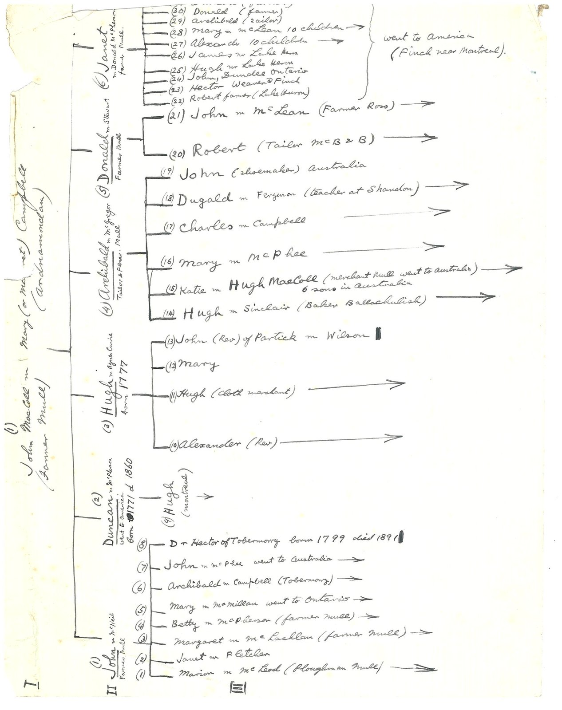
  <figcaption>The "MacColls of Mull" tree in James R. MacColl's own hand. At the head, John MacColl and Mary Campbell; their son "(3) Hugh m. Agnes Currie, born 1777" is where the line runs. Lochaber Archive Centre, GB3218 L/D73.</figcaption>
</figure>

<p>The MacColls were a small Highland clan, an offshoot of the MacDonalds, from Appin on the mainland just across the water from Mull. They were the fighting men of the Stewarts of Appin, and they paid in blood for it: of the 109 Appin men killed or wounded for Bonnie Prince Charlie in 1745, thirty-three were MacColls. By the 1770s John MacColl was farming on Mull, in the parish of Kilninian and Kilmore near Tobermory, a Gaelic-speaking place that lived off cattle, driving the herds south to sell each fall. But that whole way of life was already breaking apart, the landlords carving up the old shared farms and driving the rents up, right as John's children were being born.</p>

<p>What happened to those six children is the whole Highland story in a nutshell. Within two generations the MacColls were gone from Mull, scattered to Canada (some to a Gaelic-speaking town in Ontario the tree calls "Finch, near Montreal"), some to Australia, and one, Hugh's line, to Glasgow. This was the Clearances: across the 1800s Mull lost about four-fifths of its people as the landlords cleared the farms for sheep. Tobermory became a port people sailed away from, and charities shipped thousands of Highlanders off to Australia, where their knack with cattle and sheep was worth something. The MacColls left with everyone else.</p>

<p>One of the six, <strong>Hugh MacColl</strong>, was christened in that Mull parish on <strong>3 July 1777</strong>, son of John MacColl and Mary Campbell. He took the shorter road, to <strong>Glasgow</strong>, landing in the Gorbals, the neighborhood on the south bank of the Clyde where Highlanders driven off their land first washed up and where tailoring was one of the first jobs a newcomer could get. He became a tailor and married <strong>Agnes Currie</strong>. Two death records in the archive close the loop: "Hugh MacColl, tailor, 3 Germiston Street," who died in 1852 aged 74, and his wife "Ann [Agnes] Currie," who died in 1844 aged 64, and the Curries go back one step further, to an Alexander Currie who died in 1806. That little tailor's shop in the Gorbals was the start of everything, the mill, the Rhode Island fortune, all of it. (Hugh and his parents are now on the parish register; the generation above them, and the exact fate of his brothers and sisters, still come from the family's own tree.)</p>

<h2>Glasgow: tailors and an iron foundry</h2>
<p>Hugh of 1777's son was another <strong>Hugh MacColl, a Glasgow tailor (1813-1882)</strong>. In 1849 he married <strong>Janet Roberton</strong> in the Gorbals; the record names him "Hugh MacColl Junr."</p>

<figure>
  
  <figcaption>The 1849 marriage of Hugh MacColl and Janet Roberton, Gorbals, Glasgow.</figcaption>
</figure>

<p>Janet's father, <strong>James Roberton</strong>, ran the Gorbals Iron Foundry, 52 men; an 1894 Glasgow history calls him "the much-esteemed Bailie Roberton," a city magistrate. So the tailor married up. Janet later wrote a plain, unsentimental account of the day her father died, in 1868, which is further down.</p>

<p>A set of certificates in the archive carries the Robertons two generations further back, and out of Glasgow altogether. James Roberton was <strong>born on 4 May 1794 and baptised that June at Balfron, in Stirlingshire</strong>. The register names his father: <strong>John Roberton, printer</strong>. John had married <strong>Catharine Roberton</strong> &mdash; the same surname as his own &mdash; at <strong>Bonhill in Dumbartonshire on 25 April 1789</strong>, and the banns describe him as "John Roberton at Levenbank." Catharine was herself baptised in <strong>April 1760 at Carmunnock, Lanarkshire</strong>, daughter of <strong>James Roberton and Margaret McFarlane</strong>. The iron founder's own death certificate closes the circle: he died at Pollokshields on <strong>19 November 1868, aged 74</strong>, which matches the 1794 birth exactly, and the death was reported by his son John, Janet's brother.</p>

<p>"Printer at Levenbank" is worth pausing on. Levenbank sits in the <strong>Vale of Leven</strong>, which in the 1790s was the heart of Scotland's calico-printing and Turkey-red dyeing trade. He printed cloth, not books. So this family was already in textiles a generation before the iron foundry, and two generations before a MacColl took charge of a cotton mill in Rhode Island.</p>

<h2>The tailor's son who built a mill</h2>
<p><strong>James Roberton MacColl</strong>, born in Glasgow in 1856, was educated at Anderson Academy, <strong>Glasgow High School</strong> and the <strong>Glasgow Technical College</strong> (later the Royal Technical College, now the University of Strathclyde), and went into cloth with Henry Frybe &amp; Son, makers of cotton and woollen dress goods. By 1878, at twenty-two, he was in business for himself as a partner in Thompson &amp; MacColl. On a visit to America in 1881 he met the brothers W. F. and F. C. Sayles, who were just then starting the Lorraine Manufacturing Company, and in February 1882 he sailed for good on the <strong>S.S. Ethiopia</strong> out of Glasgow to be their agent. He ran the <strong>Lorraine Mills</strong> in Pawtucket, Rhode Island for the next forty-nine years: agent; then, from 1896, when the Sayles family stepped back, a large shareholder, treasurer and secretary; then president from 1920. He was naturalized as an American citizen at Providence on 17 December 1895, aged thirty-nine. In April 1884 he married <strong>Agnes Bogle</strong> in Glasgow. She was born in Tradeston on 15 September 1859, three years after James and in the same district, the daughter of William Bogle and Margaret Yuill; she came out to Rhode Island that year and stayed for the rest of her life. They raised six children in Pawtucket and Providence: Hugh (1885), William (1887), James (1891), Norman (1895) and Kenneth (1898), and a daughter, Margaret, born in 1888, who died the day after Christmas 1893, aged five. Five sons outlived him. So did Agnes, by six years: she died in Providence on 29 November 1937, and they lie together at Swan Point.</p>

<p>He did not stay small. Under him the Lorraine Mills ran about <strong>2,000 workers and 2,750 looms</strong>, and took the only Grand Prix for fine colored goods at the <strong>Paris Exposition of 1900</strong>, against the best of Europe. He was president of the New England Cotton Manufacturers' Association from 1905 to 1907, and it was on his watch that it widened its reach and became the <strong>National Association of Cotton Manufacturers</strong>; his son William held the same presidency in 1925&ndash;27. He chaired the executive committee of the <strong>1919 World Cotton Conference</strong> in New Orleans, ran a Rhode Island bank, sat on the board of the US Chamber of Commerce, and in the First World War was president of the British Relief Association of Rhode Island and sat on the state's Fuel Administration. When he died in Providence in 1931 the trade papers ran his obituary with a portrait. A Glasgow tailor's son who died a Yankee industrialist.</p>

<p>His death made the national wire. The same obituary ran on 23 and 24 November 1931 in Boston, Philadelphia, Atlanta, Chattanooga, Springfield, New Bedford, Vermont and North Carolina, and it lists a good deal more than the mill. He was <strong>vice president and a director of the Industrial Trust Company</strong>, then the largest bank in Rhode Island; president of the <strong>Ponemah Mills</strong> in Connecticut, of the <strong>Morris Plan Company of Rhode Island</strong>, and of the <strong>Moshassuck Valley Railroad Company</strong>. He was elected president of the New England Cotton Manufacturers Association in 1905, presided over the International Conference of Cotton Growers and Manufacturers at Washington the year after, and chaired the same conference at Atlanta in October 1907 &mdash; which is why an Atlanta paper still ran his death twenty-four years later. When the Pawtucket textile millionaire <strong>Frank A. Sayles</strong> died in 1920, MacColl was made executor of his will and a trustee of his estate.</p>

<p>He died early on <strong>23 November 1931 at his home, 260 Waterman Street, Providence</strong>, aged 75, and was buried from the Central Congregational Church two days later. The Philadelphia papers carried it because his brother, the <strong>Rev. Alexander MacColl</strong>, was pastor of the Second Presbyterian Church in that city. The obituary notes he was survived by his wife, five sons, two sisters and two brothers.</p>

<p>The <strong>Glasgow Herald</strong> of 27 June 1931 prints the annual prize list of <strong>Glasgow High School</strong>, and among the awards are a "<strong>James R. MacColl essay prize</strong>" and a "James R. MacColl essay competition." The list does not say who endowed them, so it is not quite proof. But his trade-paper obituary confirms he was a Glasgow High School boy himself, and an old boy who had made a fortune, with prizes in his name at his own school being handed out five months before he died, is about as close as it gets.</p>

<figure>
  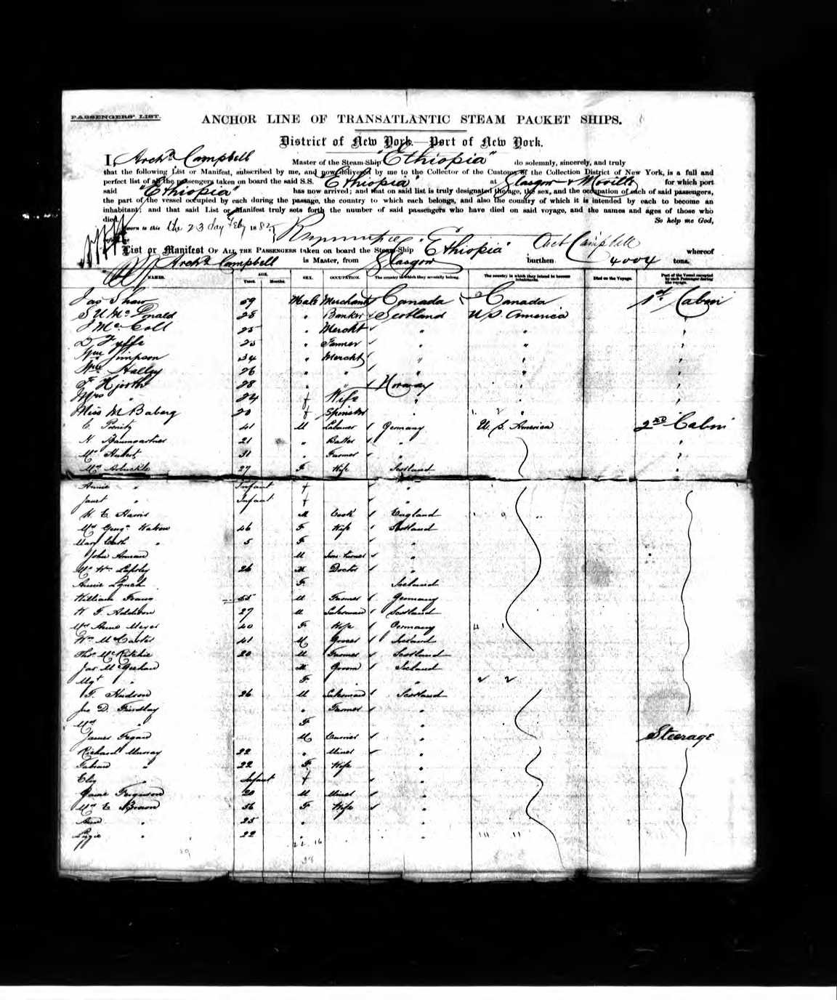
  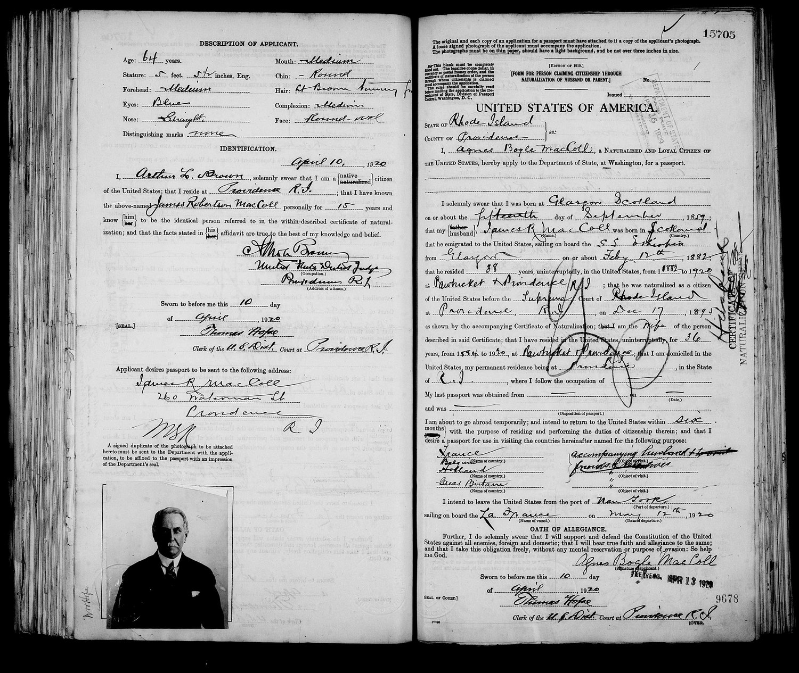
  <figcaption>The ship and the man. Left, the Anchor Line's <strong>S.S. Ethiopia</strong> passenger list, arriving New York on 23 February 1882, with "J Mccoll" aboard. Right, James's 1920 passport application: his wife Agnes's sworn statement records that he "emigrated to the United States, sailing on board the S.S. Ethiopia from Glasgow on or about Feby 17th 1882," and was naturalized at Providence on 17 December 1895. The photograph is James at 64.</figcaption>
</figure>

<figure>
  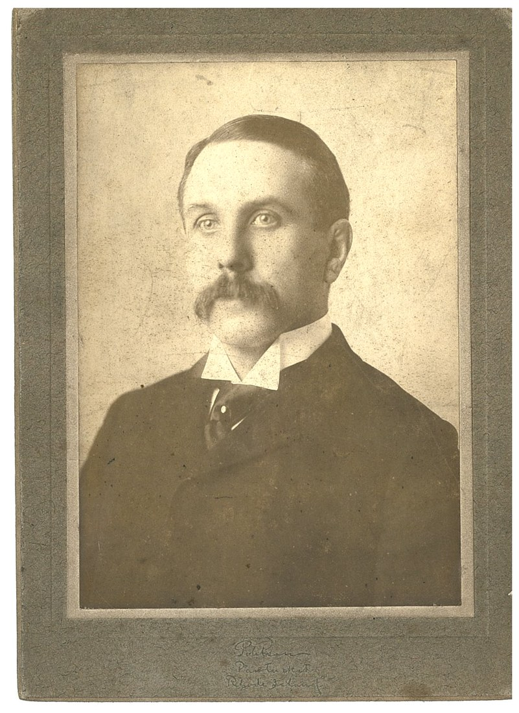
  
  
  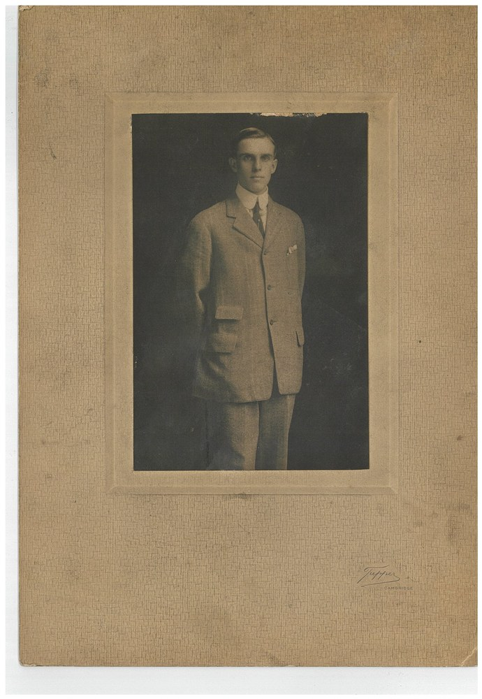
  <figcaption>Four of the six photographs in the collection. The studio portrait, taken in Pawtucket, is the same face as the passport above, James Roberton MacColl; so is the older man outside the Providence house holding a grandchild. The seated woman is likely Agnes Bogle. The young man in the light suit was photographed in Cambridge, Massachusetts, one of the sons at college. Not everyone in them is identified.</figcaption>
</figure>

<figure>
  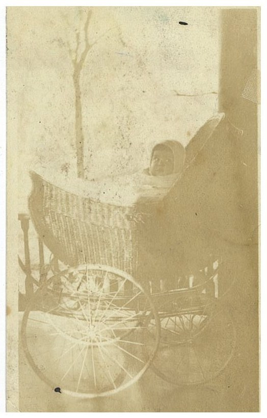
  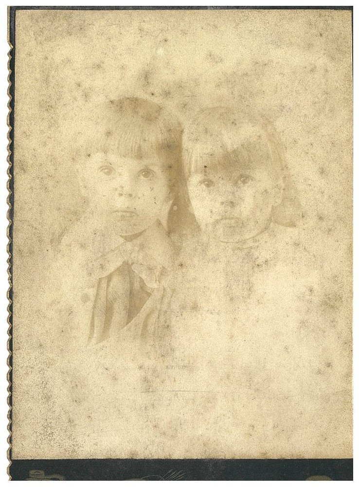
  <figcaption>The last two are badly faded: a baby in a pram, and two small children you can just make out.</figcaption>
</figure>

<p>The families at the campout all descend from one of James and Agnes's five sons, <strong>Norman Alexander MacColl</strong> (1895&ndash;1988). Norman grew up in the Rhode Island mill town and, in June 1924, in Evanston, Illinois, married <strong>Mary Kimbark</strong> (1903&ndash;1969), of a well-known Chicago family, the one a Hyde Park avenue is still named for. They raised five children in Rhode Island, and it is those five who started the branches at the campout: <strong>Louise</strong>, born July 1925, who married a Bellows; <strong>Nancy</strong>, November 1926, who married a Beckwith; <strong>Joan</strong>, March 1930, who married a Flynn; and the brothers <strong>Norman Alexander junior</strong>, April 1934, and <strong>Hugh Frederick the second</strong>, May 1937, named for the composer, who kept the MacColl name. Mary died in 1969; Norman lived on to 1988, dying at ninety-three. They are at Swan Point with his parents.</p>

<p>Norman's own life is on the record in more detail than anyone's in this story. He went into the family firm. By 1930, at thirty-four, he chaired the nominating committee of the cotton manufacturers' association his father had once led; by 1943 he was <strong>president of Lorraine</strong>, and in 1950 the census-taker wrote him down as "president, textile mill." He also presided over its end. In October 1944 he sold the cotton-and-rayon plant to Jacob Ziskind of Fall River and kept the worsted mill going; in July 1953, the week after his daughter Joan's wedding, he told the press that Lorraine was taking no more orders and running out its stock, as the New England worsted trade went south. The company's records end in 1954. James took the mill over in 1882, his sons ran it, and Norman closed it, seventy-one years on. Afterwards he sat on the board of the Industrial National Bank, his occupation given as trustee, into his seventies.</p>

<p>Off the job he sailed. He raced a Wianno Senior called <em>Halcyon</em>, won the Wianno Senior series in her in August 1933, and in 1949 was elected <strong>commodore of the Wianno Yacht Club</strong>. Wianno, on the south shore of Cape Cod, is where this family summered for three generations: James belonged to the club, Agnes was there with Norman's family in 1936, the Bronxville and Pennsylvania cousins came too, and it is where Norman Jr. met Nancy Herron, whose Washington family kept a house on the same beach. After his father died at 260 Waterman Street in November 1931, Norman moved his own family into the house, and they were still there in 1938; by 1940 they had gone round the corner to Laurel Avenue, where the household ran to twelve at that year's census, five children and three live-in staff, one of whom, Bridie Shiel from Ireland, was still with them ten years later. And he and Mary collected American pressed glass, seriously: in 1961 they gave the <strong>Bennington Museum</strong> in Vermont 1,242 goblets, one of every pattern they could find, and the museum was still showing it as "the Norman A. MacColl collection" twenty years later.</p>

<p>One thing recorded plainly, because it is on the record: in November 1945 he was one of fifteen Rhode Island company heads who signed a petition to Congress against a slate of post-war bills &mdash; national health insurance, federal aid to schools, unemployment compensation, and the bill to make the wartime Fair Employment Practice Committee permanent &mdash; calling them "the trend toward national socialism." He was a Republican mill-owner of his time and place, and he put his name to it.</p>

<p>Norman's siblings kept up the mill-town pattern. One brother, <strong>Hugh Frederick MacColl</strong> (born Pawtucket, 1885), really did go to Harvard and really was a composer, and the family has understated him. He studied violin, piano and organ as a boy in Pawtucket, went to <strong>St. Paul's School</strong> in Concord, New Hampshire from 1897 to 1903, where he served unofficially as assistant organist, and then read music at <strong>Harvard</strong>, taking his degree <em>magna cum laude</em> in 1907. He was a charter member of the University Glee Club of Providence and its accompanist from 1911 to 1936, a trustee of the <strong>New England Conservatory of Music</strong>, and sat on the visiting committee of the music department at Brown. His works &mdash; among them a "Ballad for Orchestra and Piano" and a "Romantic Suite" &mdash; were played by the <strong>Providence, Boston and Rochester Civic symphony orchestras</strong> and broadcast on WNYC, WMCA, WEAF and WJAR. And all the while he was a businessman: in business from 1907, and by the 1940s senior partner of <strong>MacColl, Fraser &amp; Co., investment bankers of Providence</strong>. He is one of the composers profiled in Claire Reis's <em>Composers in America</em> (Macmillan, 1947). Two others, William and Kenneth, married the two daughters of Alfred M. Coats, who ran the enormous <strong>J. &amp; P. Coats</strong> thread works in Pawtucket, so the MacColls married straight into the family that owned the thread empire across town. By 1931 William was treasurer of Lorraine and Kenneth vice-president and treasurer of J. &amp; P. Coats (R.I.). Another brother, James Jr., married Louise Kimbark in 1917 &mdash; the sister of the Mary Kimbark whom Norman would marry seven years later. Two brothers, two sisters: the same pattern twice.</p>

<p>The First World War reached them. On 18 May 1917, six weeks after America entered the war, Norman swore out a passport application in Providence. He was twenty-one, and where the form asks for an occupation he wrote <strong>"student at Yale."</strong> Under "country" he wrote <strong>France</strong>; under "object of visit," ambulance service; and he stated that he would leave New York on the French Line on <strong>26 May 1917</strong>. He sailed eight days later, as a volunteer, before there was any army to send him. The application still carries his photograph: a boy in a dark suit and a stiff collar, looking straight at the camera. Three weeks after he sailed, the draft registration reached his family in Providence, and his brother William had to sign the card on his behalf, because Norman was already in France. His brothers all registered too. A generation later a grandson, James Roberton MacColl III, served as a Navy chaplain in the Second World War.</p>

<figure>
  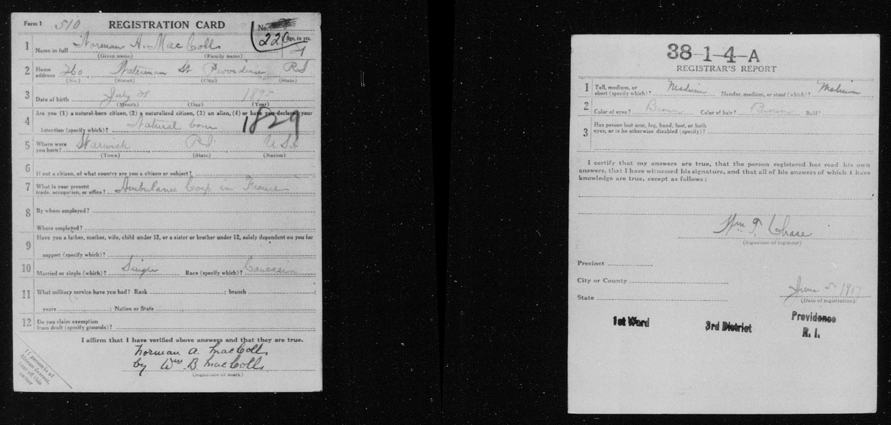
  <figcaption>Norman's draft card, Providence, June 1917. Occupation: "Ambulance Corps in France." It is signed "Norman A. MacColl by Wm. B. MacColl," his brother signing because Norman was already overseas.</figcaption>
</figure>

<figure>
  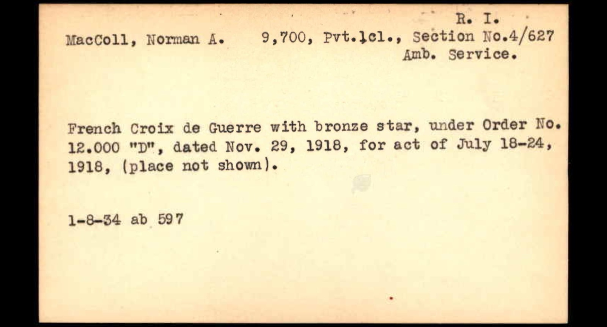
  <figcaption>Norman's award card. "MacColl, Norman A. &mdash; 9,700, Pvt. 1cl., Section No. 4/627 Amb. Service. French Croix de Guerre with bronze star, under Order No. 12.000 'D', dated Nov. 29, 1918, for act of July 18&ndash;24, 1918, (place not shown)." WWI Army Award Cards, Box 098b, United States National Archives.</figcaption>
</figure>

<p>He was decorated. An army award card gives him as <strong>"MacColl, Norman A. &mdash; 9,700, Pvt. 1cl., Section No. 4/627 Amb. Service,"</strong> and records the <strong>French Croix de Guerre with bronze star</strong>, under French Order No. 12.000 "D" dated 29 November 1918, <strong>"for act of July 18&ndash;24, 1918."</strong> He was twenty-two. The section's own muster roll for 31 December 1917 carries his line, <em>MacColl, Norman A., Sept 24/17</em>: he was sworn into the Army in France that day with most of the section, the month the volunteers became soldiers, on the same page as the two men the unit history mourns.</p>

<p>His Yale classmates wrote him up in their class book that year, and it is the closest thing we have to Norman described by people who knew him. He had come to Yale from <strong>St. Paul's School</strong> in Concord, New Hampshire and <strong>Worcester Academy</strong>, and was reading the Select Course in the Sheffield Scientific School with the class of 1918. He belonged to Theta Xi and roomed with two classmates, Harold Cheel and a man named Holden. And he played <strong>first violin in the Yale University Orchestra</strong> in 1915&ndash;16 &mdash; the musical streak that ran through his brother Hugh ran through him too. Then, in the book's own words: <em>"MacColl left the University in May, 1917, and went to France with the Yale Unit of the Ambulance Service, later re&euml;nlisting in U. S. Army Ambulance, and being assigned to S. S. U. 627."</em> He never took a degree.</p>

<p>Those dates place him precisely. The two numbers on his card are the same unit twice: the volunteer American Field Service Section Four, which in September 1917 enlisted whole into the United States Army as Section 627. The section published its own history after the war, and it describes that week. Attached to the <strong>1st French Infantry Division</strong>, it went into the line in the <strong>Forest of Villers-Cotter&ecirc;ts</strong>, north-east of Paris. On <strong>18 July 1918</strong> the division attacked out of that forest in the first line of assault, behind tanks &mdash; General Mangin's surprise counter-blow, the attack that stopped the German advance and turned the war. The ambulances followed the advance through Longpont, Villers-H&eacute;lon and Saint-R&eacute;my-Blanzy to a village called <strong>le Plessier-Huleu</strong>, which the French took on 23 July.</p>

<blockquote>
<p>"The hottest spot was le Plessier-Huleu. There many of the men had to drive through almost a barrage to get to the poste."</p>
</blockquote>

<p>Twenty years later his Yale class published a follow-up volume, and Norman set down his own war in four lines. He went to France in May 1917 with <strong>S.S.U. 64, the Yale Unit</strong>; enlisted as a private in the U.S. Army Ambulance Service that September; and was posted to <strong>S.S.U. 4 and S.S.U. 627</strong>, the same section under both its numbers. Then he listed where he had been: <strong>Verdun, Compi&egrave;gne, Villers-Cotter&ecirc;ts, l'Assigny and Alsace</strong>. It is the only surviving account of his war in his own words, and it is that short.</p>

<p>That is the section's own account of the ground Norman's medal was given for. The award was a collective one &mdash; the history records that the section "received its citation for the work it did during the attack at Villers-Cotter&ecirc;ts," and each man got the cross. Afterwards the section went to Alsace, then marched to the Rhine and wintered at Gross-Gerau in Germany before being ordered home in February 1919. Army paperwork matches: Norman is on a holding detachment's roll on 14 February 1919, and sailed for home on the <strong>USS Pueblo on 16 March 1919</strong>, with his father, James R. MacColl of Providence, listed as his contact.</p>

<p class="usnote">A caution for anyone using this: the section's published history is the unit's account, not Norman's. He is not named in it &mdash; he came to the section from the Yale unit, not from the Field Service whose men that book rosters &mdash; so nothing above is in his own words. It is his unit, his week and the citation he was decorated under &mdash; but it is not his own account, and no source here quotes him.</p>

<h2 id="tree">The family tree</h2>
<p>The line from a farmhouse on Mull down to Norman and Mary, and the four branches under them.</p>

<div class="familytree">
  <div class="node"><span class="role">The Isle of Mull, 1700s</span><span class="nm">John MacColl &amp; Mary Campbell</span> <span class="yr">farmers on Mull, Kilninian parish</span></div>
  <div class="connector"></div>
  <div class="node"><span class="role">Glasgow, born 1777</span><span class="nm">Hugh MacColl &amp; Agnes Currie</span> <span class="yr">clothier and tailor</span></div>
  <div class="connector"></div>
  <div class="node"><span class="role">Glasgow, married 1849</span><span class="nm">Hugh MacColl &amp; Janet Roberton</span> <span class="yr">tailor (1813-1882) · Janet of the foundry Robertons</span></div>
  <div class="connector"></div>
  <div class="node"><span class="role">To Rhode Island, 1882</span><span class="nm">James Roberton MacColl &amp; Agnes Bogle</span> <span class="yr">1856-1931 &amp; 1859-1937 · the Lorraine Mills · five sons and a daughter</span></div>
  <div class="connector"></div>
  <div class="node apex"><span class="role">Great-grandparents</span><span class="nm">Norman Alexander MacColl &amp; Mary Kimbark</span> <span class="yr">1895-1988 &amp; 1903-1969 · married 1924, Evanston, Illinois · Norman, Croix de Guerre 1918</span></div>
  <div class="connector"></div>
  <p class="tline">Their children, the four branches:</p>
  <div class="children">
    <div class="node"><span class="nm">Beckwith</span><span class="pl">Nancy MacColl, 1927&ndash;2018</span></div>
    <div class="node"><span class="nm">Flynn</span><span class="pl">Joan MacColl, 1930&ndash;2013</span></div>
    <div class="node"><span class="nm">MacColl</span><span class="pl">Alex, 1934&ndash;2011, and his brother Hugh</span></div>
    <div class="node"><span class="nm">Bellows</span><span class="pl">Louise MacColl, 1926&ndash;2012</span></div>
  </div>
  <p class="tline" style="margin-top:12px">Corrections and additions always welcome.</p>
</div>

<p>Janet Roberton, who married into the line in 1849, brings her own three generations with her, all of them on paper:</p>

<div class="familytree">
  <div class="node"><span class="role">Carmunnock, Lanarkshire</span><span class="nm">James Roberton &amp; Margaret McFarlane</span> <span class="yr">their daughter Catharine baptised April 1760</span></div>
  <div class="connector"></div>
  <div class="node"><span class="role">Bonhill, married 25 April 1789</span><span class="nm">John Roberton &amp; Catharine Roberton</span> <span class="yr">John a printer, "at Levenbank" in the Vale of Leven</span></div>
  <div class="connector"></div>
  <div class="node"><span class="role">Balfron, born 4 May 1794</span><span class="nm">James Roberton</span> <span class="yr">the Gorbals iron founder · died Pollokshields, 19 November 1868</span></div>
  <div class="connector"></div>
  <div class="node"><span class="role">Married Hugh MacColl, 1849</span><span class="nm">Janet Roberton</span> <span class="yr">wrote the account of her father's death below</span></div>
</div>

<h2>In their own hand</h2>
<p>The box also held handwriting: Hugh's courtship letters to Janet before their 1849 wedding, a letter to Janet from her mother in Dunoon, and Janet's account of the night her father, the iron founder James Roberton, died in 1868.</p>

<figure>
  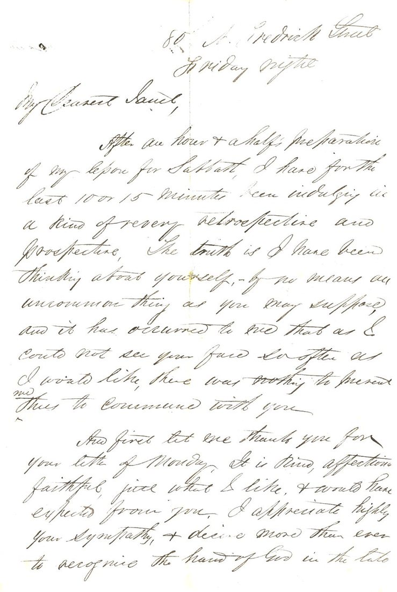
  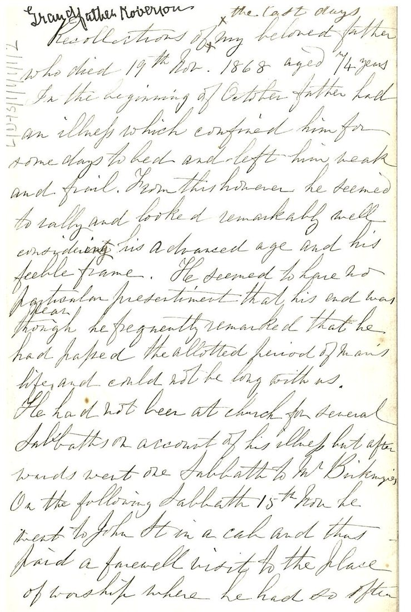
  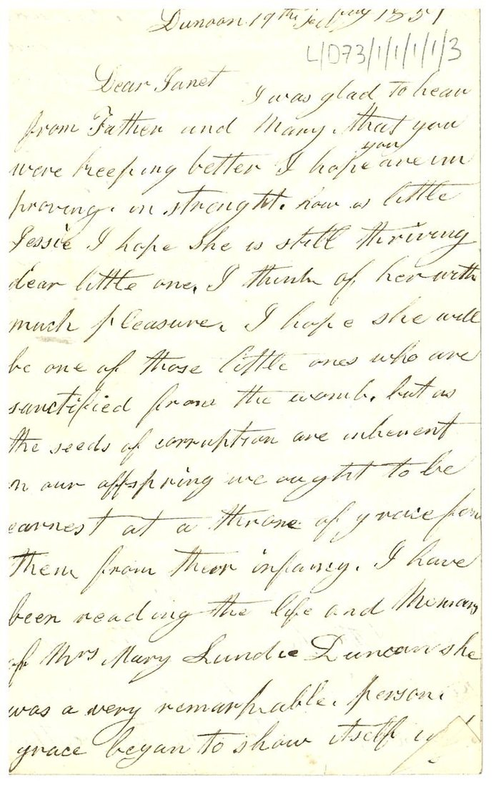
  <figcaption>Left to right: one of Hugh's courtship letters to Janet, the first page of Janet's "Recollections of my beloved father," and the 1851 letter to Janet from her mother in Dunoon. Lochaber Archive Centre.</figcaption>
</figure>

<blockquote>
<p>"On rising to go to take to tea he remarked to Mary his granddaughter, 'Well, I'm not rested yet, but I'll get a long rest after tea.' After taking tea, in good spirits, Mary left him, little thinking she would never again see her dear grandpapa in life. Less than an hour afterwards he passed gently away without a struggle."</p>
<p>And Hugh, courting Janet: "I have been thinking about yourself, by no means an uncommon thing as you may suppose, and it has occurred to me that as I could not see your face so often as I would like, there was nothing to prevent me thus to commune with you."</p>
</blockquote>

<p><a href="documents/maccoll-papers-transcriptions.md">Full transcriptions of the letters and recollections.</a></p>

<h2 id="archive">The archive</h2>
<p>The MacColl papers are catalogued, and anyone in the family can order copies. Email the <strong>Lochaber Archive Centre</strong> at <strong>lochaber.archives@highlifehighland.com</strong> and ask about collection <strong>GB3218 / L/D73, the MacColl papers</strong>. It runs about £2.75 per scanned page, emailed to you. A good deal of the collection is still unscanned, including Janet Roberton's diaries (three volumes, 1848 to 1860), two pages of Hugh's own diary from 1850, the letters that passed between the family and Rhode Island from 1929 to 1942, and a typed file of transcriptions of the Roberton letters and diaries that the archive already holds.</p>
<ul class="docs">
  <li><a href="documents/maccoll-finding-aid.pdf">The full 103-page catalog of the MacColl papers (PDF)</a><span class="doc-what">Every item in the 16-meter archive, described, so you can see what's there and ask for exactly what you want.</span></li>
</ul>

<div class="footer"><p>Sources: the MacColl papers at the Lochaber Archive Centre (Fort William, Scotland); Scottish statutory and parish registers; the US census; Find a Grave; contemporary newspapers, including the Boston Globe, the Philadelphia Inquirer and the Glasgow Herald of 1931 and the Chicago Tribune of 1924; <em>Textile World</em>, 28 November 1931; the Rhode Island Historical Society's catalogue of the Lorraine Manufacturing Company records; US passport applications of 1920 and 1922; United States army records of the First World War; the <em>History of the American Field Service in France</em> (1920); and the family's own records.</p></div>
</main>
